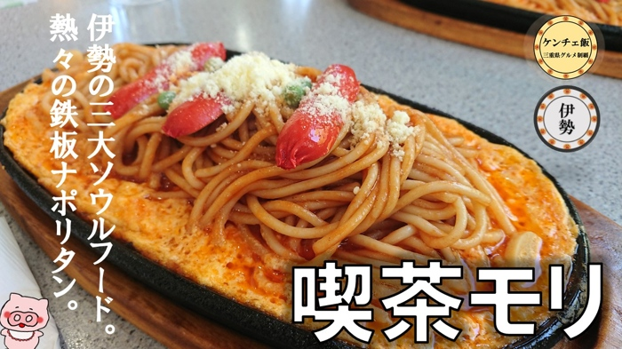
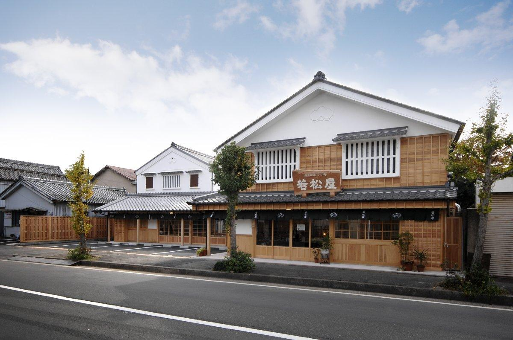
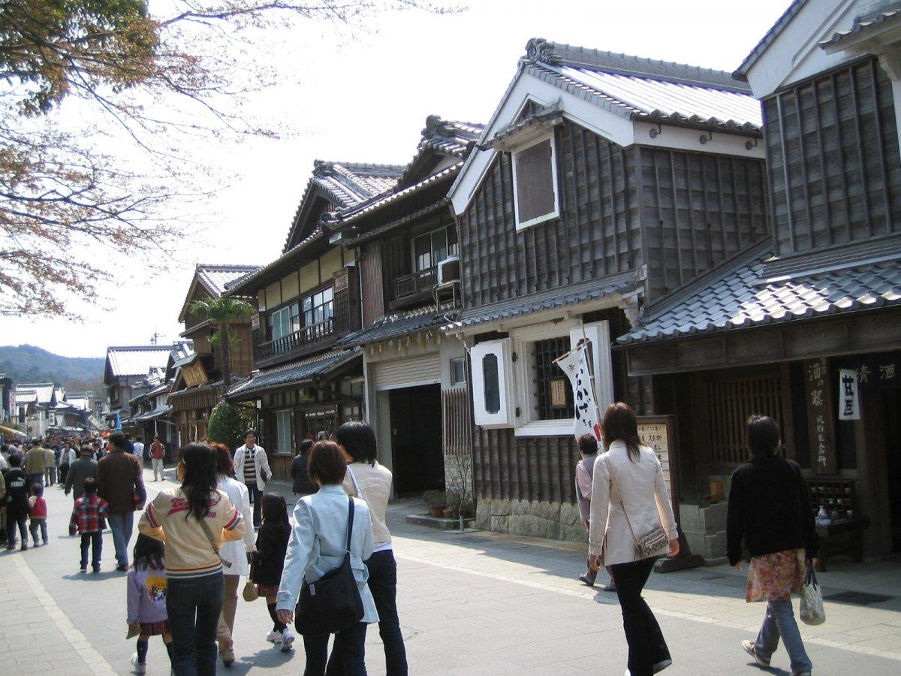
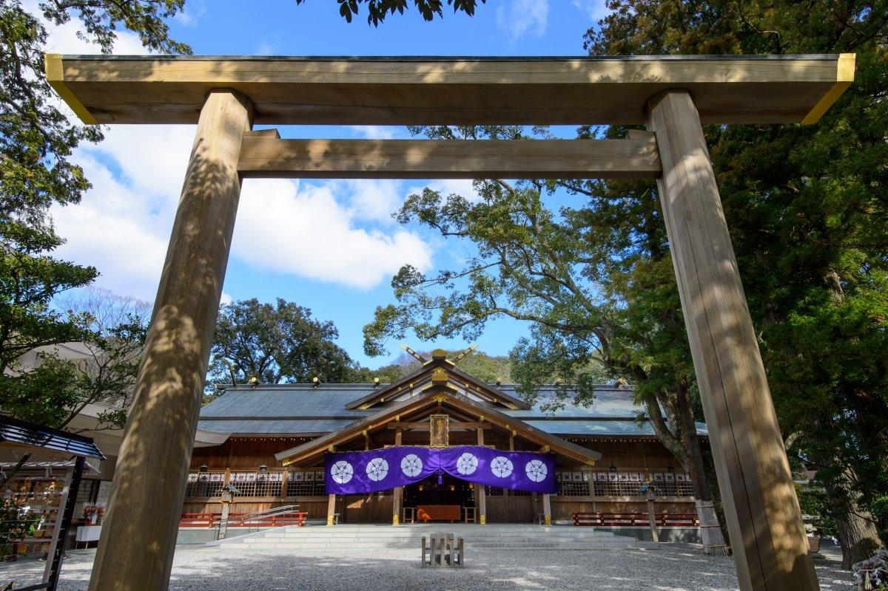
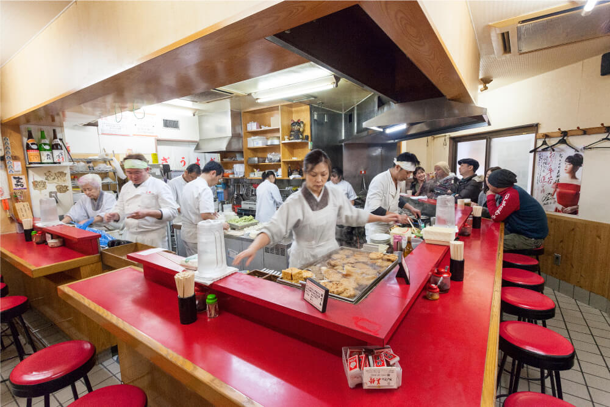
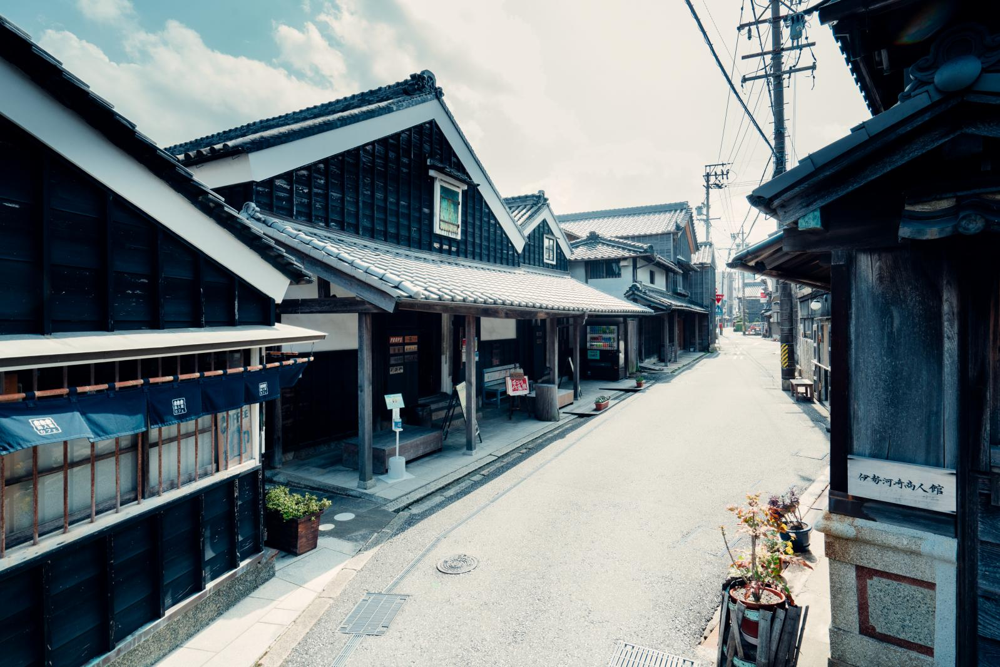

11:00-19:30 / 車あり / 家族4人
M!LK 曽野舜太さんゆかりの伊勢を、家族で一日めぐる。
喫茶モリ、河崎、内宮、おはらい町、猿田彦神社、美鈴本店をゆったり回る、食べ歩きと参拝のプレゼン風プランです。
この日の組み方
聖地感を出しつつ、子どもたちが「神社ばかり」と感じにくいよう、食事・街歩き・参拝を交互に入れています。
タイムライン
伊勢に11:00到着、19:30出発想定。週末や夏休みは内宮周辺の駐車待ちを見て、河崎を少し短縮すると安定します。
11:00-12:10
喫茶モリで昼食
モリスパ、チーズ、バナナジュースを中心に。4人なら少し分けながら、この後の食べ歩きに余白を残します。
12:20-13:10
若松屋本店と河崎散策
伊勢ひりょうず、紅生姜系のはんぺい、チーズ棒を少しずつ。古い町家が残る河崎で写真休憩も。
13:35-16:30
おはらい町・おかげ横丁・内宮
先に少し散策し、14:25ごろから内宮参拝。帰りに赤福、伊勢茶、お土産を回すと閉店前に動きやすいです。
16:40-17:15
猿田彦神社
内宮から近く、短時間で回れる道ひらきの神社。進路やこれからの成長を願う家族旅行の流れにも合います。
17:35-19:00
ぎょうざの美鈴本店で夕食
餃子4人前から始めて、おにぎり、からあげ、カニクリームコロッケ、おでんを追加。手作り工程を見るのも楽しい店です。
19:00-19:30
余裕時間・帰路へ
提供待ち、渋滞、トイレ、お土産整理に使えるクッション。予定どおりなら高柳商店街を短く見てもOK。
聖地スポット
今回のルートで家族に説明しやすいポイントを、行く順番にまとめました。

喫茶モリ
曽野さんの高校時代ゆかりとして知られる伊勢の喫茶店。鉄板スパゲティのモリスパを主役に。

若松屋本店・河崎
河崎の老舗で食べ歩き。町家や蔵の残るエリアなので、家族写真にも向いています。

内宮・おはらい町
伊勢らしさの中心。参拝だけでなく赤福、伊勢茶、お土産をセットにすると家族全員が楽しみやすいです。

猿田彦神社
内宮近くで短く寄れるスポット。道ひらきの意味づけがあり、旅程の後半に入れやすい場所です。

ぎょうざの美鈴本店
手作り餃子の名店。餃子だけでなく、おにぎりや一品料理も合わせると家族向けの夕食になります。

今回は外した候補
キッチンクック、Cafeわっく、カンパーニュは魅力的ですが、食事量と時間が重なるため別日向きです。
ルート地図
地図は伊勢市中心部から内宮方面までを表示しています。正確な経路は上のGoogleマップボタンから開いてください。
当日の注意点
お店の営業時間・定休日は変わることがあるので、出発前に公式情報を確認してください。
駐車場
内宮周辺は混む日はA駐車場にこだわらず、市営内宮B駐車場方面へ回ると動きやすいです。
食べすぎ対策
昼にモリ、午後に若松屋、夜に美鈴が入るため、昼食は全員が満腹まで食べ切らないのがコツです。
暑さ・雨
夏は内宮の参拝で体力を使います。雨なら河崎散策を短くして、おはらい町や食事時間を長めに。
代替候補
喫茶モリが休みならキッチンクック、夕食を軽くしたい日は美鈴を駅裏店や別日に回す選択もあります。